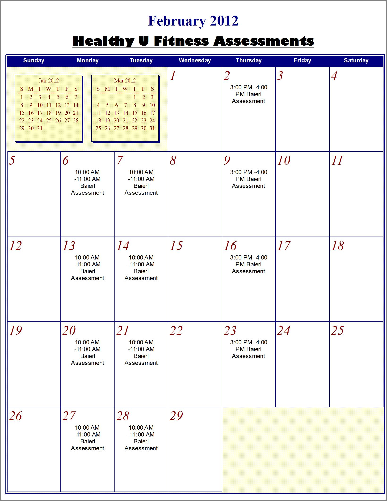

Program Overview
The Intramural and Recreational Program of the Division of Student Affairs serves the needs of the University of Pittsburgh in two areas. First, the program satisfies student, staff and faculty demands by providing structured activities and maintaining open recreation facilities for the university population of 38,000 students, faculty and staff. Second, the program provides a unique educational work experience for students. It is this second aspect of Pitt's Intramural Program which sets it apart from the rest of the country.
2012 Spring Term Facility Schedule/ Hours
For holiday, term break schedules and closures, please see the "News & Announcements" section below.

News & Announcements
- Trees Pools/ Big East Championship: In February, Pitt will host the Big East Swimming & Diving Championship which will impact use of the Trees Hall pools. To find out the hours, see the schedule here.
- Basketball schedules will be available this week, however, please hold all schedule inquiries until Thursday.
- Strongman Challenge - Registration is now open.
- Basketballs can be checked out from Trees Hall. Learn more here.
- NOTICE IM Teams: If you would like to find out about making roster changes OR time/day of play changes for your intramurals team, visit the "IM Sports" page for guidelines found in the "updates" section near the top of the page.
- Individuals who are interested in participating in intramural sports, but do not have a team can sign-up in the IM office (3034 Baierl Rec. Center). When possible, students will be aided in being placed on a team. Feel free to visit or call our office for more information.
- Virtual Facility Tour: A Virtual Tour of all the Intramural and Recreation's facilities has been published. Check it out here!
- IM Rule Book Link to the IM Rule Book here.
Locker Rentals
Locker Rentals must now be paid for with Panther Funds only. Payments will be accepted Mon-Fri from 8:30-4:30.
For more information on rentals and contact information click here.
Locker Renewals: Locker renewals for the Spring term are now going on. Please see the "Locker Rentals" page for details.
|
Please click on the animated box below for announcements and holiday schedules
| |
Healthy U Fitness(Formerly known as "Fit at Pitt") The February calendar is now available. |
 |